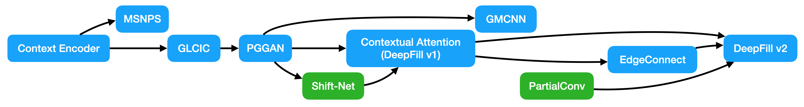

[Image Inpainting]基于CNN的十个经典模型
Image Inpainting
碎碎念【2021.09.27】
今天终于鼓起勇气找导师寻求科研项目了。表达了对生成类模型的偏好之后，导师说他有一个博士生在做 blind image inpainting 的工作，我可以跟着做一下。好吧，全新的征程就此开启！
这之前我已经读了 CV 各个方向的经典模型论文，但是还真没接触过 image inpainting 这块。Image inpainting 说来简单，就是图像填充，在一张图像上放上 mask（可能不规则），要求模型把图像恢复出来。这玩意儿已经做了好几年了，但是有个问题，就是 mask 都是给定的，模型明确地知道哪些地方是需要填充的，哪些地方不是。这就和实际情况不太符合了，我们拿到一张被污染的图片想恢复它，才不会花时间把污染区域标出来呢！所以没有 mask 的 image inpainting，就叫做 blind image inpainting 了，就是我拿到的课题。Blind image inpainting 目前做的人还不多，最近的文章是 ECCV2020 港中文的 VCNet[1]。Alright，那就开搞呗！
本文主要关注于基于卷积网络的方法，它们大都发表在 2019 年之前。从 2020 年开始，随着 Transformer 进军 CV 届，大家都开始用 Transformer 做填充了，有关工作放在以后的文章总结。
首先说明几个术语。输入的有缺损的图像一般称为 corrupted / masked / deteriorated image，其中缺失的像素叫做 invalid / missing / hole pixels，没有缺失的叫做 valid / remaining / ground truth pixels，一般用一个 bool mask 来指示缺失像素位置。值得注意的是，大家默认 valid pixels 可以直接 copy 到模型的输出结果去，也会在测试的时候这么干，所以别傻乎乎地直接把输出拿去评测，白白亏几个点。
Image inpainting 有几个特点：
Ill-posed，即如果缺失区域够大的话，理论上多种填充方式都是可行的。也因此，这个任务很难有好的评价指标，因为对比 ground truth 的指标，如 L1、MSE、PSNR、SSIM 等，必然对多样性填充不利。
全局信息很重要，因为缺损的地方不一定规则，可能好似涂鸦一般满图都是，如下图：

很明显，任何一个局部都有大量缺失像素，不利于我们填充。
高层次语义 & 低层次纹理：一方面，我们希望模型学到高层次的特征，不能乱填，要保持语义的一致性；另一方面，模型也要学到低层次的纹理，保证局部真实性。
填充图像最简单传统的方式是 copy-and-paste，核心思想是从图片本身的 remaining pixels 或者一个大数据集中找到最相似的 image patch 粘到缺失的地方。显然这个方法计算量大，涉及人工设计的距离指标，效果也不太行。但都 2021 年了，我们肯定用深度学习来搞啊！在资料[2]中，作者总结了 10 个必须知道的模型，下面我们来依次看看。
Context Encoder
2016 年的 Context Encoder[3] 是第一个 GAN-based inpainting model，可谓是开山之作，也是这个任务的 baseline。作者的研究意图是：
我们都知道 CNN 能提取图像特征，前面的层提取简单的低层次特征，后面的层提取复杂的高层次语义特征，也可以叫做 latent feature。作者想用这个高层次语义特征帮助还原缺失部分。
做 Inpainting 学到的特征能够深度刻画出原图的语义，因而对其他任务也有帮助。
upd：没想到，2021 年何恺明提出 MAE 做自监督学习，其思想其实在 Context Encoder 中已经有所体现了。
Context Encoder 奠定了图像填充模型的整体框架——encoder-decoder 框架，即 encoder 提取 feature，decoder 重建图像。具体而言，encoder 用的 AlexNet（毕竟那年代没什么可用），decoder 基本就是 encoder 的对称结构，用 transposed convolution 上采样。
然后接下来是本模型的核心贡献：正如第一节所言，image inpainting 任务需要关联远处的空间信息（即全局视野），这是卷积不能做到的。那什么能做到呢？全连接（毕竟那年代只能想到全连接了）！可是全连接有个显著的问题：参数量太大了……\(CHW=512\times4\times 4\) 的 feature map，全连接一波，就是 \((CHW)^2=67.1\times 10^6\) 的参数量。所以作者提出了 Channel-wise Fully Connected Layer。这名字看起来好长一串，实际上很简单，就是每个 channel 独立地做全连接，这样 \(CHW\) 的 feature map 只用 \(CH^2W^2\) 的参数量就 ok。另外作者还在 channel-wise fc 之后接了一个 conv1x1 来让信息跨 channels 流动，就好似 depthwise separable conv 一样。用全连接引入全局信息实属时代限制，后面的工作会用 dilated conv、non-local、transformer 等更好的方法。

模型结构如上图所示，encoder 将输入图像从 128x128 下采样到 4x4，经过 channel-wise fc 获取全局信息，然后用 decoder 生成了 64x64 的中心缺失区域。生成的图像和真实的缺失图像送给判别器判别真假。
Loss 分成两部分：重构的 L2 loss 和 adversarial loss： \[ \begin{align} &\mathcal L_{rec}(x)=||\hat M\odot(x-F((1-\hat M)\odot x))||_2^2\\ &\mathcal L_{adv}=\max_D\mathbb E_{x\in\mathcal X}[\log D(x)+\log(1-D(F((1-\hat M)\odot x)))]\\ &\mathcal L=\lambda_{rec}\mathcal L_{rec}+\lambda_{adv}\mathcal L_{adv} \end{align} \] 如果只用 \(\mathcal L_{rec}\) 的 L2 loss，结果会很模糊。这是因为 L2 倾向于给出较为平均化的结果，这样平均误差小并且比较“安全”。如果只用 \(\mathcal L_{adv}\)，结果会很突兀，跟随便 copy 了一块差不多……
从 GAN 的角度看，整个 encoder-decoder 是一个加了 context 作为 condition 的生成器，但是没有给判别器加 condition。据作者所言，给判别器加 condition（即输入整张图像）以后太容易判别真假了，导致生成器的梯度消失难以训练。但不加 condition 会产生一个问题：由于判别器只能看到缺失区域而不是整张图像，\(\mathcal L_{adv}\) 无法保证填充的语义是否正确，全局语义的一致性仅靠 \(\mathcal L_{rec}\) 保证。这大概是为什么仅用 \(\mathcal L_{adv}\) 结果很突兀的原因吧。
MSNPS
MSNPS (Multi-Scale Neural Patch Synthesis)[4] 是 Context Encoder 的加强版，也是 2016 年的工作。作者研究的动机是：
- 囿于内存限制和训练的困难，现有方法只能处理低分辨率情形
- Context Encoder 明显还有改进空间——特别是 texture details 还需改进
作者认为，textures and colors 可以看做是 styles，于是应用了 style transfer algorithm 来加强 Context Encoder 生成的图像的纹理细节。具体解决方法是：
- 使用 Context Encoder 预测缺失部分
- 对 predicted pixels 和 valid pixels 使用 style transfer 方法，将 valid pixels 的 style 迁移到 predicted pixels 中
- 本文假定测试图像均是 512x512 的，中间有一个 256x256 的缺失矩形区域。流程分为三个阶段：输入首先被 resize 到 128x128（缺失区域 64x64），然后通过 Context Encoder 得到低分辨率的重构图像；接下来 upsample 成 256x256（缺失区域是粗糙填充的 128x128），二次重构图像；最后 upsample 成原大小并第三次重构图像（refinement）。

MSNPS 整体结构如上图(bottom) 所示，Content Network 是一个略微修改的 Context Encoder，详细结构如上图(top) 所示；Texture Network 是一个 ImageNet 预训练的 VGG-19；本文的主要 insight 应该是 loss function 的设计。
Content Network 与 Context Encoder 的不同之处有两点：1. channel-wise fc 被替换成标准的 fc；2. 所有 ReLU 或者 Leaky ReLU 都被替换成 ELU。作者先按照训练 Context Encoder 的方法（L2 loss + Adversarial loss）独立训练 Content Network，训练好后其输出将被用来优化整个结构。
Texture Network 是和 Style Tranfer 相关的网络，其目的是保证 generated pixels 和 valid pixels 有着相似的 style。作者用了这样的观点：CNN 不同层次的 feature maps 能够反映图像的 style，如果两个图像在网络中的 feature maps 相似，那么它们有着相似的 style（说实话，这观点是一个 over-simplified claim）。怎么比较 feature maps 的相似度呢？用 Gram matrix。作者在 relu3_1 和 relu4_1 层强制缺失区域内的 feature maps 和缺失区域外的 feature maps 是相似的，以此试图达到相似 style 的目的。
Loss function 由 3 部分加权组成：content loss (L2), texture loss, TV loss (total variation loss)：
Content loss: \[ E_c(h(x, R), h(x_i, R)) = ||h(x, R)-h(x_i, R)||_2^2 \] \(x\) 是真实图像，\(x_i\) 是第 \(i\) 个阶段的输出图像，\(h(x_i, R)\) 指 \(x_i\) 在缺失区域 \(R\) 内的部分。这就是 Context Encoder 中的 \(\mathcal L_{rec}\)。
Texture loss: \[ E_t(\phi_t(x),R)=\frac{1}{|R^\phi|}\sum_{i\in R^\phi}||h(\phi_t(x), P_i)-h(\phi_t(x), P_{nn(i)})||_2^2 \] \(R^\phi\) 是 feature maps 上对应缺失区域的部分，\(\phi_t(x)\) 是 Texture Network 在输入 \(x\) 时的输出，\(|R^\phi|\) 指在缺失区域中抽样 patch 的数量，\(P_i\) 是中心在 \(i\) 处的 patch，\(nn(i)\) 是最近邻位置： \[ nn(i)=\mathop{\arg\min}_{j\in\mathcal N(i)\wedge j\not\in R^{\phi}}||h(\phi_t(x),P_i)-h(\phi_t(x), P_j)||_2^2 \] 公式看起来很复杂，但其实很简单。首先把图像输入预训练的 VGG-19，得到 feature maps relu3_1 和 relu4_1。然后把 feature maps 分成对应缺失区域的部分 \(R^\phi\in\mathbb R^{c\times s\times s}\) 和缺失区域外的部分。然后对于每个 patch，找到最相近的有效 patch，计算 2 范数。
TV loss： \[ \gamma(x)=\sum_{i,j}((x_{i, j+1}-x_{i, j})^2+(x_{i+1, j}-x_{i,j})^2) \] 这是图像处理中常用的保证图像光滑性的玩意儿。
该模型的缺点在于：1. 复杂场景依旧很难填充；2. 多阶段导致速度慢，且训练不是 end-to-end.
这篇论文还是有很多贡献的：它可以视为 coarse-to-fine 的前身，首先重建一个有一定 pixel-wise reconstruction accuracy 的模糊图像，然后 refine texture details；这篇文章里的 Texture loss 的思想也影响了后续工作的 Perceptual Loss / Style Loss 等。
GLCIC
GLCIC (Globally and Locally Consistent Image Completion)[5] 是早稻田大学在 2017 年的工作，是 Image Inpainting 的里程碑式成果。
作者提出 GLCIC 的动机是：
Patch-based methods 有一个前提假设，那就是我们能从缺失区域外找到相似于填充内容的东西，这对于自然风景图片一般可行，但是对于诸如把人眼遮住的图像就不可行了。我们的模型需要具备生成 novel fragments 的能力；
现有 GAN-based 方法（前两种模型）用 discriminator 来加强填充区域的细节，有些方法（e.g. MSNPS）比较缺失区域内外的 neural responses 来保证纹理的一致性。如果我们同时考虑图像的局部和全局信息来强制得到 local consistency 和 global consistency 会怎样？
怎么处理高分辨率图像？MSNPS 的解决方案是反复迭代处理，这导致填充 1 张 512x512 的图片在 Titan X GPU 上需要 1min。我们能否只用 one single forward pass 就搞定？——要回答这个问题，我们要知道导致这个问题的原因——计算量太大！为什么计算量大？全连接！那怎么解决？全卷积！可是卷积不能引入远处的信息？Dilated Convolution!
简单来说，本文提出的解决方案是：
- Fully Convolutional Network with Dilated Convolution：引入 Dilated Convolution 代替 fc 层，这样既能够收集距离较远的信息（扩大了 receptive field），又能够保证全卷积以适应不同大小的图像输入
- 用两个 discriminator，一个看整张图像保证 global consistency，另一个看填充区域周围的局部保证 local consistency
- 最后引入了简单的后处理过程：Fast Marching method 和 Poisson image blending

上图是整个网络的架构，由三部分组成：Completion Network (generator), Local Discriminator, Global Discriminator。两个 Discriminator 只在 train 阶段使用，不在 test 阶段使用。
Completion Network 是一个 FCN 全卷积网络，因此可以接受各种大小的图像，注意上图中输出图像和输入图像大小都是 \(H\times W\)。
两个 Discriminator 架构基本相同，global 输入大小为 256x256，local 输入大小为 128x128。需要强调的是，训练阶段只有一个缺失区域，测试阶段却可能有很多缺失区域。另外对于 local discriminator 而言，训练时我们需要给它真实的图像和生成的图像，这里真实的图像是随机选取的 128x128 部分。
Loss function 和之前的一样，由两部分组成：L2 loss & GAN loss \[
\begin{align}
&L(x,M_c)=||M_c\odot(C(x, M_c)-x)||^2\\
&\min_C\max_D\mathbb E[\log D(x, M_d)+\log(1-D(C(x, M_c), M_c))]
\end{align}
\] \(C(x, M_c)\) 指代 Completion Network，\(x\) 是输入图像，\(M_c\) 是 binary mask（1 缺失，0 valid）；L2 loss 只在缺失区域内计算，缺失区域外直接用原本的像素点覆盖。\(D(x,M_d)\) 指代两个 Discriminator，\(M_d\) 是针对 local discriminator 的随机 mask。二者加权和即是 joint loss： \[
\min_C\max_D\mathbb E[L(x, M_c)+\alpha\log D(x, M_d)+\alpha\log(1-D(C(x, M_c), M_c))]
\] 
训练流程分为 3 步：
- 只用 L2 loss 训练 completion network \(T_C\) 轮；
- 训练 discriminators \(T_D\) 轮；
- 交替训练 completion network 和 discriminators 若干轮，这次用 joint loss。
先让 completion network 生成模糊但差不离的结果（参见 Context Encoder 的结果和解释），然后训练 discriminators 让它们跟上 completion network 的进度，最后交替训练细化生成结果。
PGGAN
PGGAN (Patch-based Image Inpainting with GANs)[6] 是 2018 年提出的，可以看做 GLCIC 的变体。作者的动机是引入 residual connection 和 PatchGAN[7]。Residual 不解释了，现在的模型大多都有 residual connection 的影子，膜一膜何恺明 orz～～～在一般的 GAN 中，discriminator 对一张图像输出一个值表示真假，但是 PatchGAN 输出一个矩阵，矩阵每个元素表示对应 patch 的真假，见下图：

不得不说 PatchGAN 太适合 Image Inpainting 任务了，因为图像修复就是一部分为真、一部分为假。与 PatchGAN 相对应地，原来的 GAN 就被称作 Global GAN，或 G-GAN。由于 PatchGAN 关注的是 local consistency，所以与 GLCIC 类似地，为了得到 global consistency 还需要一个 G-GAN，这就是这篇论文提出的模型被称为 PGGAN 的原因。Global discriminator 和 PatchGAN discriminator 的前几层是共享的，见下文的图片。
另外，PGGAN 依旧沿袭了 GLCIC 的 Dilated Convolution，结合 residual connection 构成了 dilated residual block 用于 generator 中。

作者还在模型中使用了 interpolated convolution，并与 dilated convolution 的效果做比较。Interpolated convolution 首先用插值将输入 resize 到希望的大小，然后施加标准的卷积。
关于 loss function，这篇文章和以往没有大的变化： \[ \begin{align} &\mathcal L_{rec}=\frac{1}{N}\sum_{n=1}^N\frac{1}{WHC}||y-x||_1\\ &\mathcal L_{GAN}(G, D)=\mathbb E_{x\sim p(x)}[\log D(x)]+\mathbb E_{y\sim P_G(\tilde x)}[\log(1-D(G(\tilde x)))]\\ &\mathcal L=\lambda_1 \mathcal L_{rec}+\lambda_2 \mathcal L_{g\_adv}+\lambda_3\mathcal L_{p\_adv} \end{align} \]
吐个槽：为什么作者一会儿写成抽样的形式，一会儿写成期望的形式，就不能统一一下吗……
Shift-Net
2018 年的 Shift-Net[8]，可以看成 deep learning-based copy-and-paste。传统 copy-and-paste 方法有很好的纹理细节，毕竟我们是直接复制的，但是其语义一致性很差。另一方面，深度学习方法用 fc 或者 dilated conv 获取整张图像的上下文信息，能够具有较好的语义一致性，但是即便使用 adversarial loss 帮助细化，其细节也不能让人满意。所以作者希望结合二者的优点。
简要来说，作者提出了一个 guidance loss 来让模型在 decode 过程中学会填充缺失部分。另外，还引入了一个 shift-connection layer 来匹配缺失区域内部的特征和外部的特征，每个匹配的外部特征被 shift 到对应内部特征的位置上，和原来的特征做 concatenation。下面详细介绍之。

上图是 Shift-Net 的架构。注意如果没有 shift-connection layer，这就是一个标准的 U-Net。Discriminator 没有作出，但是就是一个 PatchGAN discriminator。
Guidance loss 衡量缺失区域内的 decoded feature 和真实图像在缺失区域内的 encoded feature 的差异： \[ \mathcal L_g=\sum_{y\in\Omega}||(\Phi_{L-l}(I))_y-(\Phi_l(I^{gt}))_y||_2^2 \] 其中，\(\Omega\) 是缺失区域，\(\bar\Omega\) 是未缺失区域；对于 \(L\) 层的 U-Net，\(\Phi_l(I)\) 表示第 \(l\) 层的 encoded feature，\(\Phi_{L-l}(I)\) 表示第 \(L-l\) 层的 decoded feature。我们最终目的是得到 \(I^{gt}\)，因此我们期望 \(\Phi_l(I)\) 和 \(\Phi_{L-l}(I)\) 包含了所有 \(\Phi_l(I^{gt})\) 的信息；又由于缺失区域内 \((\Phi_l(I))_y=0\)，所以我们希望 \((\Phi_{L-l}(I))_y=(\Phi_l(I^{gt}))_y\)，这就是上面损失函数的来源。
仅靠 Guidance loss 得到的特征比较模糊，作者提出 Shift-connection layer 来利用缺失区域外的特征以添加细节。 \[ x^*(y)=\arg\max_{x\in\bar\Omega}\frac{\left\langle(\Phi_{L-l}(I))_y,(\Phi_l(I))_x\right\rangle}{||(\Phi_{L-l}(I))_y||_2||(\Phi_l(I))_x||_2} \] 简单来说，对于缺失区域内的位置 \(y\)，找到这样一个位置 \(x^\ast\)，它是 \((\Phi_{L-l}(I))_y\) 和 \((\Phi_l(I))_x\) 的余弦相似度最大的那个 \(x\)。于是乎，对于每个 \(y\)，能找到一个 shift vector \(u_y=x^\ast(y)-y\)，指示和它最相似的位置的偏移量。
得到偏移量之后，我们就可以得到 shift 后的特征： \[ \left(\Phi^{shift}_{L-l}(I)\right)_y=(\Phi_l(I))_{y+u_y} \] 然后将该特征 concatenate 到 decoded feature 上，如上文架构图所示。
Shift-Net 的损失函数非常标准： \[ \mathcal L=\mathcal L_{L_1}+\lambda_g\mathcal L_g+\lambda_{adv}\mathcal L_{adv} \] 除了 Guidance loss，依旧使用了 L1 loss 和 Adversarial loss，论文所用超参数为 \(\lambda_g=0.01, \lambda_{adv}=0.002\)。
值得注意的是，shift 操作要求一个 \(\arg\max\)，这是一个不可导操作，需要我们手动修改梯度。事实上，找最近邻是一个 hard assignment，在后续的工作中，我们可以用 soft assignment 代替，即考虑所有缺失区域外的位置并分配权重，这样所有操作都是可导的（是不是有 self attention 的味道了~）。
Contextual Attention (DeepFill v1)
刚说到 attention，这不就来了吗。2018 年的 DeepFill v1[9]，也叫做 Generative Image Inpainting with Contextual Attention (CA)，就是 Shift-Net 的加强版。论文作者发展了 copy-and-paste 并且提出了可微的、全卷积的 contextual attention layer，其思想是：找到缺失区域外的像素对缺失区域内的像素的贡献度，外部像素的信息和起来可以改善内部的特征。Shift connection 只看最相近的特征，是 hard assignment，不可微；CA 是 soft assignment，由权重指示贡献度，可微。
Contextual Attention 如下图所示：

下图带文字说明已经很详细了，我就不再赘述了。（好吧其实是我懒～）

上面得到了 attention map，但是考虑到相邻像素一般关系更强，所以我们按如下方法做 attention propagation： \[ \hat s_{x,y,x',y'}=\sum_{i\in\{-k,\ldots,k\}}s^*_{x+i, y, x'+i, y'} \] 怎么理解呢？

设虚线下方是 invalid pixels，上方是 valid pixels，蓝色折线的同一侧相似度设为 1 ，不同侧相似度设为 0。考虑缺失区域的某一行 \(y\) 和对应真是区域的某一行 \(y'\)，那么 \(s_{x,y,x,y'}\)（注意这里 \(x=x'\)）是 \(1,1,1,1,0,0,0,0,1,1,1,1\)，如图所示。现在我们对 \(s\) 做 \(k=1\) 的 attention propagation，那么得到的新的 attention score 就是 \(3,3,2,1,0,0,1,2,3,3\)，这说明了 attention propagation 的作用：让 \(s_{x,y,x,y'}\) 和 \(s_{x+1,y,x+1,y'}\) （相对地）变得更相近。
上面说的是 left-right propagation（因为 \(i\) 加在 \(x\) 上），同理再做一次 top-down propagation。这个操作可以通过卷积完成，用单位矩阵做卷积核。
网络架构如下图所示，是 two-stage coarse-to-fine，两个阶段的网络都是 FCN with dilated convolution，Contextual Attention 应用在了第二个 refinement generator 上。

具体应用方式如下图所示：

关于 loss function，作者依旧应用了 L1 loss 和 GAN loss。不过，L1 loss 用的是 spatially discounted L1 loss，对每一个像素做了加权：weight mask 的权重设置为 \(\gamma^l\)，其中 \(l\) 为缺失像素到最近的真实像素的距离，\(\gamma\) 为常数，模型中设置为 \(0.99\)。GAN loss 用的是 WGAN-GP loss，作者称该 loss 也是基于 L1 距离的，因此网络更容易训练并且训练过程更稳定。
有趣的是，作者做了丢弃 reconstruction loss 的 ablation study，不过结论是不能丢，这玩意儿很关键。
GMCNN
GMCNN (Generative Multi-column Convolutional Neural Networks)[10] 同样是 2018 年的工作，这篇论文的主要贡献是：
- 提出的网络具有三个分支，每个分支 dilated conv 的 kernel size 不同，从而获取不同大小的 receptive fields；
- 引入两个新的 loss function：confidence-driven reconstruction loss 和 implicit diversified Markov Random Field (ID-MRF) loss。前者是一个加权 L1 loss，后者让生成的 patches 找到最近的有效区域作为参考。
下面我们来细看论文主要内容。

上图是 GMCNN 的网络结构，一个 generator 具有 3 条分支（3x3, 5x5, 7x7），两个 discriminators 分别看 global 和 local，一个预训练 VGG19 作为 MRF 的特征提取网络。
从 MRF 的角度，我们想最小化生成的特征和真实图像上与之最相近的特征之间的差异（\(\min\min\)）。以前都用 cosine similarity，但是这种方式往往会给不同的 generated feature patches 以相同的最近真实 feature patch，导致模糊的结果；因此作者采用一种基于相对距离的方法。
设 \(\hat Y_g\) 是缺失区域的生成内容，\(\hat Y^L_g\) 和 \(Y^L\) 是预训练网络的第 \(L\) 层特征。对于从 \(\hat Y^L_g\) 和 \(Y^L\) 分别取出的特征 patch \(v,s\)，定义相对相似度为： \[ RS(v, s)=\exp\left(\left(\frac{\mu(v, s)}{\max_{r\in\rho_v(Y^L)}\mu(v, r)+\epsilon}\right)/h\right) \] 其中 \(\mu(.,.)\) 是余弦相似度，\(\rho_v(Y^L)\) 是 \(Y^L\) 除开 \(v\) 的区域。随后对其进行标准化： \[ \overline{RS}(v, s)=RS(v, s)/\sum_{r\in\rho_v(Y^L)}RS(v, r) \] 现在，我们可以定义 \(\hat Y^L_g\) 和 \(Y^L\) 的 ID-MRF loss： \[ \mathcal L_M(L)=-\log\left(\frac{1}{Z}\sum_{s\in Y^L}\max_{v\in \hat Y^L_g}\overline{RS}(v, s)\right) \]
其中，\(\max_{v\in \hat Y_g^L}\overline{RS}(v, s)\) 说明 \(s\) 是与 \(v\) 最相似的 patch。考虑极端情况：所有 \(v\) 都和某一个 \(s\) 最相似，那么 \(\max\overline{RS}(v, s)\) 就会很小，loss 就会很大。因此，ID-MRF loss 能够尽量给不同的生成 patch 匹配不同的真实 patch。
作者用 VGG19 作为预训练网络，所以最后提出的 loss 为： \[ \mathcal L_{mrf}=\mathcal L_M(\mathrm{conv}4\_2)+\sum_{t=3}^4\mathcal L_M(\mathrm{conv}t\_2) \] Spatial Variant Reconstruction Loss 是一个 weighted l1 loss，作者用高斯分布作为 weight，使得越接近边缘的像素权重较大，越中心的像素权重较小。
和 Contextual Attention 相似，作者采用了 improved WGAN loss 作为 adversarial loss，最终总的 loss function 为： \[ \mathcal L=\mathcal L_{c}+\lambda_{mrf}\mathcal L_{mrf}+\lambda_{adv}\mathcal L_{adv} \] 在训练中，所有图片都 resize 到 256x256，中心缺失区域 128x128。
PartialConv
前面的大多数模型都假设了缺失区域是一个或多个矩形，PartialConv [11]着眼于解决不规则 mask 的情形。
动机：
- 以前的方法以相同的方式看待缺失区域和有效区域——都是填充了 [0, 255] 的像素，只不过缺失像素置为预定义的值（0 或者均值），在上面做卷积会导致卷积结果受到缺失区域内像素的影响，这不合理。
- 已有的方法假设缺失区域是矩形的，许多模型用的 local discriminator 接收的输入是矩形缺失部分，虽然 test 过程中不要求缺失区域是矩形，但是得到的结果就会不尽人意。
对于第 1 点，我之前有过误解，以为只要缺失区域在标准化后值是 0，即最开始时定义为均值，那么卷积过程中一直以 0 值参与运算，并且求导时对参数的梯度贡献也为 0，所以没有实质影响。但是事实上，这些 0 会影响结果的 scale——同样 3x3 的 kernel，覆盖的缺失像素多，卷出来的值就小；覆盖的缺失像素少，卷出来的值就大。所以 PartialConv 其实还按有效像素的个数 scale 了卷积结果的。
Partial Convolutional Layer 到底是什么呢？设 \(W\) 和 \(b\) 是卷积 filter 的权重和偏置，\(X\) 表示将进行卷积的像素值/特征值，\(M\) 是 binary mask（0 表示缺失，1 表示有效）。Partial Convolution 计算如下： \[ x'=\begin{cases}W^T(X\odot M)\dfrac{\text{sum}(\mathbf{1})}{\text{sum}(M)}+b,&\text{if sum}(M)>0\\0,&\text{otherwise}\end{cases} \] 其中 \(\mathbf{1}\) 表示全 \(1\) 的矩阵，大小和 \(M\) 相同；\(\frac{\text{sum}(\mathbf{1})}{\text{sum}(M)}\) 是一个缩放系数，因为不同输入参与计算的有效值数量不同。可以看见，卷积的结果只依赖于有效部分的输入值。
每个 partial convolution layer 之后要更新 binary mask。更新方式很简单，如果某一个位置有至少一个有效输入对其有贡献，那么它的 mask 就是 \(1\)： \[ m'=\begin{cases}1,&\text{if sum}(M)>0\\0,&\text{otherwise}\end{cases} \] 下图是一个简单的例子：

模型架构并没有新奇的地方，作者采用了带有 skip connection 的 U-Net 结构，只不过把所有卷积层换成了 Partial Convolution。
关于 loss function，很有趣的是这个模型没有用到 discriminator，除了 standard L1 loss 和 variation loss (TV loss)，作者还采用了两个高层次特征的 loss（Perceptual loss、Style loss）来生成细节纹理。L1 loss 是老朋友了： \[ \begin{align} &\mathcal L_{hole}=\frac{1}{N_{I_{gt}}}||(1-M)\odot(I_{out}-I_{gt})||_1\\ &\mathcal L_{valid}=\frac{1}{N_{I_{gt}}}||M\odot(I_{out}-I_{gt})||_1 \end{align} \] Perceptual loss (VGG loss) 的思想是：我们想让生成的图片经过预训练 VGG 的某些层之后得到的 feature 与真实图片的 feature 相近： \[ \mathcal L_{perceptual}=\sum_{p=0}^{P-1}\frac{||\Psi_{p}^{I_{out}}-\Psi_{p}^{I_{gt}}||_1}{N_{\Psi_{p}^{I_{gt}}}}+\sum_{p=0}^{P-1}\frac{||\Psi_{p}^{I_{comp}}-\Psi_{p}^{I_{gt}}||_1}{N_{\Psi_{p}^{I_{gt}}}} \] 其中，\(I_{comp}\) 是把 \(I_{out}\) 在有效区域内的部分用真实像素替换的结果；\(\Psi_p^I\) 是输入 \(I\) 在 VGG 的 \(p\) 层的特征图；\(N_{\Psi_p^I}\) 是 \(\Psi_p^I\) 的元素数量。和 L1 loss 在图像空间进行比较不同，Perceptual loss 是在高层次特征空间进行比较的，这样的好处是，如果图像有微小变化，比如平移了几个像素，对 L1 loss 的影响是巨大的，但是对提取的特征没有太大影响。
Style loss： \[ \begin{align} &\mathcal L_{style_{out}}=\sum_{p=0}^{P-1}\frac{1}{C_pC_p}||K_p\left((\Psi_p^{I_{out}})^T(\Psi_p^{I_{out}})-(\Psi_p^{I_{gt}})^T(\Psi_p^{I_{gt}})\right)||_1\\ &\mathcal L_{style_{comp}}=\sum_{p=0}^{P-1}\frac{1}{C_pC_p}||K_p\left((\Psi_p^{I_{comp}})^T(\Psi_p^{I_{comp}})-(\Psi_p^{I_{gt}})^T(\Psi_p^{I_{gt}})\right)||_1 \end{align} \] 可以看见，feature map 依旧是由预训练 VGG 给出的。Gram matrix 包含了纹理、颜色等信息，因此计算 feature map 的 Gram matrix 的 L1 loss 使得生成区域的 style 尽可能接近真实图像。\(K_p\) 是一个依赖于第 \(p\) 层特征图大小的缩放系数。
Total Variation loss 保证图像的光滑性： \[ \mathcal L_{tv}=\sum_{(i, j)\in R,(i,j+1)\in R}\frac{||I_{comp}^{i, j+1}-I_{comp}^{i, j}||_1}{N_{I_{comp}}}+\sum_{(i, j)\in R,(i+1,j)\in R}\frac{||I_{comp}^{i+1,j}-I_{comp}^{i, j}||_1}{N_{I_{comp}}} \] Final loss 为上述四个 loss 的加权和： \[ \mathcal L_{total}=\mathcal L_{valid}+6\mathcal L_{hole}+0.05\mathcal L_{perceptual}+120(\mathcal L_{style_{out}}+\mathcal L_{style_{comp}})+0.1\mathcal L_{tv} \]
EdgeConnect
2019 年的 EdgeConnect[12]，又是一个 two-stage 的佳作。其思想是先生成 edge，再根据 edge 上色，效果图着实让人眼前一亮。

正如前文所说，现有的 image inpainting 方法容易生成模糊的图片——这是 L1 loss / L2 loss 造成的。为了进一步提升图像质量，我们可以提供先验信息——一个 edge map。我们把图像填充分成两步——先预测边 (edge prediction)，再填颜色 (color filling)，即 “lines first, color next” 策略。
这篇论文的网络结构和以往类似，用了两个 generators——分别生成边和最终图像、以及两个 discriminators——分别对边和最终图像判断，可以看成类似于 coarse-to-fine 的结构。Loss functions 也和之前的类似，对于第一个 generator，作者用了 adversarial loss 和 feature matching loss，后者类似于 VGG perceptual loss；对于第二个 generator，作者用了 style loss, perceptual loss, L1 loss 和 adversarial loss。
一堆 loss 里面只有 feature matching loss 需要讲一下，其他 loss 参看前面讲过的模型。Feature matching loss 如下： \[ L_{FM}=\mathbb E\left[\sum_{i=1}^L\frac{1}{N_i}||D_1^{(i)}(C_{gt})-D_1^{(i)}(C_{pred})||_1\right] \] 其中，\(D_1\) 是 edge map 的 discriminator，\(L\) 是它的层数，\(C_{gt}\) 和 \(C_{pred}\) 分别是真实和预测的 edge map，\(N_i\) 是第 \(i\) 层元素数量。和 VGG perceptual loss 很相似，我们想让真实 edge map 和生成的 edge map 在 discriminator 内部提取的特征相近。那为什么它要用 discriminator 而不是 VGG 呢——因为 pretrained VGG 不是在 edge 上训练的，自然直接用效果不好。
在训练过程中，作者采用了谱归一化 Spectral Normalization (SN)。SN 被用在 edge generator、edge discriminator 和第二个 discriminator 上。
最后提一点，图像的真实 edge 是用 Canny edge detector 生成的。
DeepFill v2
本文讨论的最后一个模型是 2019 年的 DeepFill v2[13]，也叫 GatedConv，也许是最具有应用性的模型。它可以看成 DeepFill v1, Partial Convolution 和 EdgeConnect 的加强版。简单来说，Contextual Attention (DeepFill v1) 和 user guidance (EdgeConnect) 都被应用在了 DeepFill v2 中。Partial Convolution 被修改为了 Gated Convolution，前者是用一个固定的规则更新 mask，而后者改为了一个可学习的方式更新，可以说，Gated Convolution 是 Partial Convolution 的可学习版本。
DeepFill v2 的网络结构与 DeepFill v1 相比没有大的改变，仍然是 coarse-to-fine 结构，除了卷积改成了 gated convolution：

可以看见，输入分别是 masked image, mask 和可选择的 sketch image，经过一个 coarse network 后得到 coarse result，然后该粗糙图像经过 CA 和 Gated Convolution 双分支的 refinement network 后得到精细图像。Discriminator 采用 PatchGAN 结构。另外，和 EdgeConnect 相同，谱归一化 SA 被应用在了 discriminator 中。
Gated Convolution 是本文的重点，下图展现了 Partial conv 和 Gated conv 的区别：

其实 Gated convolution 和 Spatial Attention 差不多，用一个卷积+sigmoid 来预测 gating，sigmoid 的输出在 \((0, 1)\) 之间，所以 soft gating 可以看做 binary mask 的 soft 版本，其作为“重要度”（“有效度”）点乘在 feature 上。
Loss function 只有两个：L1 loss 和 GAN loss。GAN loss，更准确地说，SN-PatchGAN loss，对于生成网络如下所示： \[ \mathcal L_G=-\mathbb E_{z\sim \mathbb P_Z(z)}[D^{sn}(G(z))] \] 可见其形式非常简洁，其本质上是一个 hinge loss。
小结
学了 20 天（2021-09-27～2021-10-18）的 Image Inpainting，看了 10 个模型、8 篇论文，是时候做一个简单的 review 了。
Image Inpainting 任务有着自己鲜明的特点。想一想，拿到一张有缺失的图像，人是如何脑补出缺失的部分呢？没错，我们需要对整幅图有个宏观上的把握，然后依据未缺失的部分推测缺失内容。对于神经网络也是如此，要填充原图中缺失的部分，必须从未缺失部分「借到」信息。另外，Image Inpainting 任务有个显著的难点：在全局上，填补的内容不能和未缺失部分违和，同时在局部上，必须足够细致。综上，我认为做 Image Inpainting，就是要解决如下三个问题：
- 如何获取远处信息
- 如何保证全局语义一致性（high-level 角度）
- 如何保证局部纹理真实性（low-level 角度）
纵观我们目前看过的模型，它们都有机制——要么是 loss function、要么是网络架构（设计网络模块），来保证上述三点内容。用 loss function 是在训练阶段保证，用网络架构则在测试阶段也能发挥作用。这些机制如下所示：
- Loss functions
- Reconstruction loss ( [weighted] L1 / L2 loss)：保证全局一致性，同时很重要的一点是，它倾向于填补模糊的图像，也就是对局部真实性有负面的作用
- Global GAN loss：保证全局一致性
- Local GAN loss / PatchGAN loss：保证局部真实性
- Perceptual loss：保证全局一致性和局部真实性
- Style loss：保证局部真实性
- ID-MRF loss：保证局部真实性
- Network modules
- Shift-connection：保证局部真实性
- Contextual Attention：保证局部真实性
（注：未加粗的 loss function 私以为人工介入很强，个人不喜欢，并且 DeepFill v2 也并不采用它们）
另外，随着 Image Inpainting 方法的发展，mask 形状从最开始的规整的矩形，变成了多个矩形，最后变成了任意形状。
综上，我将这些模型总结成了下表：
| 方法 | insight | mask 形状 | 如何获取远处信息 | 如何保证 global consistency | 如何保证 local consistency |
|---|---|---|---|---|---|
| Context Encoder (L2 + Adv) Context Encoders: Feature Learning by Inpainting |
Encoder-decoder 架构 指出仅 L2 模糊的原因，用 GAN 来细化结果 channel-wise fc 获取全局信息 |
64x64 rect | Channel-wise fc | L2 loss (only in masked region) | Adversarial loss (only in masked region) |
| Context Encoder (only L2) Context Encoders: Feature Learning by Inpainting |
multiple holes | Channel-wise fc | L2 loss (only in masked region) | 无 | |
| GLCIC (aka. GLGAN) Globally and Locally Consistent Image Completion |
Global + Local discriminators FCN 使得输入大小可变 fc -> dilated conv |
train: one random rect，width & height ~ [96, 128]（由训练方法和 local discriminator 架构决定的） test: multiple holes |
Dilated conv | L2 loss (only in masked region) Global discriminator (adversarial loss) |
Local discriminator (adversarial loss) |
| PGGAN Patch-Based Image Inpainting with Generative Adversarial Networks |
Local discriminator -> PatchGAN | free | Dilated conv | L1 loss Global GAN (adversarial loss) |
PatchGAN (adversarial loss) |
| Shift-Net Shift-Net: Image Inpainting via Deep Feature Rearrangement |
Shift-connect layer Guidance loss |
free | Shift-connection | L1 loss Guidance loss |
PatchGAN (adversarial loss) Shift-connection |
| Contextual Attention (DeepFill v1) Generative Image Inpainting with Contextual Attention |
Contextual Attention Spatially discounted L1 loss Coarse-to-fine 二级结构 |
train: one random rect test: multiple holes |
Contextual Attention Dilated conv | Spatially discounted L1 loss (weighted L1 loss) Global WGAN-GP loss |
Contextual Attention Local WGAN-GP loss |
| GMCNN Image Inpainting via Generative Multi-column Convolutional Neural Networks |
Multi-column ID-MRF loss |
train: 256x256 rect | Dilated conv (3 branches) | Spatially Variant Reconstruction loss (weighted L1 loss) Global WGAN-GP loss |
Local WGAN-GP loss ID-MRF loss |
| PartialConv Image Inpainting for Irregular Holes Using Partial Convolutions |
Partial Convolution No discriminator |
free | / | L1 loss Perceptual loss TV loss |
Perceptual loss Style loss |
| EdgeConnect EdgeConnect: Generative Image Inpainting with Adversarial Edge Learning |
lines first, color next | free | Dilated conv | L1 loss Perceptual loss |
Edge prior Perceptual loss Style loss Adversarial loss (D2) |
| DeepFill v2 Free-Form Image Inpainting with Gated Convolution |
Gated Convolution | free | Contextual Attention Dilated conv |
L1 loss | PatchGAN (adversarial loss) Contextual Attention |
可以做出它们的发展关系图（其实关系很难用一个箭头说明清楚，只能大致画画，看个乐呵就好）：

发展过程中，有许多方法（loss、架构）被更好的方法取代了，也有很多延续到了现在。那当下我们还经常用的有哪些呢？我把它们总结如下：
- Losses
- Reconstruction loss
- Adversarial loss
- Perceptual loss
- Modules
- Dilated Convolution
- Contextual Attention
- Partial Convolution / Gated Convolution
- Basic architectures
- Encoder-decoder / U-Net
- PatchGAN
学习每个模型的过程中，我时不时有些 idea，这里把它们收集起来好了：
首先，在学前几个模型的时候，我老在想 Transformer 似乎很适合这个任务——因为 Transformer 关注全局信息，自注意力模块按相似度加权的做法和 Image Inpainting 也很搭。后来看到了 Contextual Attention，就意识到了这和 Transformer 异曲同工，核心思想是一致的。
这些模型基本都用了大比例的 reconstruction loss，但是从理论上讲，global discriminator 是可以对全局真实性进行限制的，那为什么大家普遍用了大比例的 l1 / l2 呢？我在 Contextual Attention 的论文里找到了答案，作者说不要 l1 loss 会导致很难训练。不过我想，既然 l1 / l2 loss 对局部真实性有负面作用，希望今后能找到一种方法丢掉 l1 / l2 loss， 或者改进使其没有/减弱负面影响。
除了 Context Encoder 这个古董模型以外，其他模型在测试阶段其实都能给任意形状 mask 作为输入，只不过嘛，对于那些训练的时候只能输入一个矩形 mask 的模型来讲，这么做训练和测试输入就不一致了，那效果可想而知也不会太好。（这一点在 PartialConv 论文里也说了）
Partial Convolution 中，mask 的更新是二值化的，这完全可以改进为实值权重，只要将 mask 的感受野相加后归一化即可，即把原更新方式： \[ m'=\begin{cases}1&\text{if}\;\text{sum}(M)>0\\0&\text{otherwise}\end{cases} \] 改为： \[ \begin{align} &\tilde m'=\text{sum}(M)\\ &m'=\text{Normalize}(\tilde m') \end{align} \]
Gated Convolution 是对 Partial Convolution 的改进，它的做法很「暴力」，直接把 mask 的更新变成一个可学习的过程： \[ m'=\sigma(\text{conv}(M)) \] 可以认为是和 SE Block 类似的一种 Attention 方法。但是！SE Block 直接干是因为人们确实没法知道各个 channel 都学了些啥、哪些更重要，但 Partial Convolution 的 mask 是有实际意义的啊，直接干也许效果不差，但是可能训练变得很困难（猜想，没实验过）。换句话说，Partial Convolution 的 mask 更新方式是一种人为引入的归纳偏置，而有道理的归纳偏置往往有助于训练。所以，说了这么多，我想到的解决方法是：用类似于 residual connection 的思想结合 Partial Convolution（或者我刚说的修改版本）和 Gated Convolution，让 Gated Convolution 学习残差，即： \[ m'=\sigma\left(m'_{Partial}+\text{conv}(M)\right) \]
大多数模型在复原 edge 方面表现不佳，例如一个柱子向下延伸，生成的图像中柱子的边缘会越来越糊。不过，EdgeConnect 已经大幅缓解了这个问题。
EdgeConnect 引入的 edge 可以看做是先验信息，其最终的填补结果非常依赖于 edge 的生成结果。Edge generator 能轻松生成简单结构的 edge，但是对于复杂结构，比如一整个狗头，效果也不佳。复杂结构的生成问题其实是一个现在依旧没有解决的问题。遵循引入先验信息的思路，私以为我们可以找一些其他的先验信息，比如语义分割的结果？分割结果描述轮廓，edge 描述形状细节，二者结合也许能使效果更好。
参考资料
- Wang, Yi, Ying-Cong Chen, Xin Tao, and Jiaya Jia. VCNet: A Robust Approach to Blind Image Inpainting. In Computer Vision–ECCV 2020: 16th European Conference, Glasgow, UK, August 23–28, 2020, Proceedings, Part XXV 16, pp. 752-768. Springer International Publishing, 2020. ↩︎
- Chu-Tak Li. “10 Papers You Must Read for Deep Image Inpainting”. https://towardsdatascience.com/10-papers-you-must-read-for-deep-image-inpainting-2e41c589ced0 ↩︎
- Deepak Pathak, Philipp Krahenbuhl, Jeff Donahue, Trevor Darrell, and Alexei A. Efros, “Context Encoders: Feature Learning by Inpainting,” Proc. International Conference on Computer Vision and Pattern Recognition (CVPR), 2016. ↩︎
- Chao Yang, Xin Lu, Zhe Lin, Eli Shechtman, Oliver Wang, and Hao Li, “High-Resolution Image Inpainting using Multi-Scale Neural Patch Synthesis,” Proc. International Conference on Computer Vision and Pattern Recognition (CVPR), 2017. ↩︎
- Satoshi Iizuka, Edgar Simo-Serra, and Hiroshi Ishikawa, “Globally and Locally Consistent Image Completion,” ACM Trans. on Graphics, Vol. 36, №4, Article 107, Publication date: July 2017. ↩︎
- Ugur Demir, and Gozde Unal, “Patch-Based Image Inpainting with Generative Adversarial Networks,” https://arxiv.org/pdf/1803.07422.pdf. ↩︎
- Phillip Isola, Jun-Yan Zhu, Tinghui Zhou, and Alexei A. Efros, “Image-to-Image Translation with Conditional Adversarial Networks,” Proc. Computer Vision and Pattern Recognition (CVPR), 21–26 Jul. 2017. ↩︎
- Zhaoyi Yan, Xiaoming Li, Mu Li, Wangmeng Zuo, and Shiguang Shan, “Shift-Net: Image Inpainting via Deep Feature Rearrangement,” Proc. European Conference on Computer Vision (ECCV), 2018. ↩︎
- Jiahui Yu, Zhe Lin, Jimei Yang, Xiaohui Shen, Xin Lu, and Thomas S. Huang, “Generative Image Inpainting with Contextual Attention,” Proc. Computer Vision and Pattern Recognition (CVPR), 2018. ↩︎
- Yi Wang, Xin Tao, Xiaojuan Qi, Xiaoyong Shen, and Jiaya Jia, “Image Inpainting via Generative Multi-column Convolutional Neural Networks,” Proc. Neural Information Processing Systems, 2018. ↩︎
- Guilin Liu, Fitsum A. Reda, Kevin J. Shih, Ting-Chun Wang, Andrew Tao, and Bryan Catanzaro, “Image Inpainting for Irregular Holes Using Partial Convolution,” Proc. European Conference on Computer Vision (ECCV), 2018. ↩︎
- Kamyar Nazeri, Eric Ng, Tony Joseph, Faisal Z. Qureshi, Mehran Ebrahimi, “EdgeConnect: Generative Image Inpainting with Adversarial Edge Learning,” Proc. International Conference on Computer Vision (ICCV), 2019. ↩︎
- Jiahui Yu, Zhe Lin, Jimei Yang, Xiaohui Shen, Xin Lu, and Thomas Huang, “Free-Form Image Inpainting with Gated Convolution,” Proc. International Conference on Computer Vision (ICCV), 2019. ↩︎